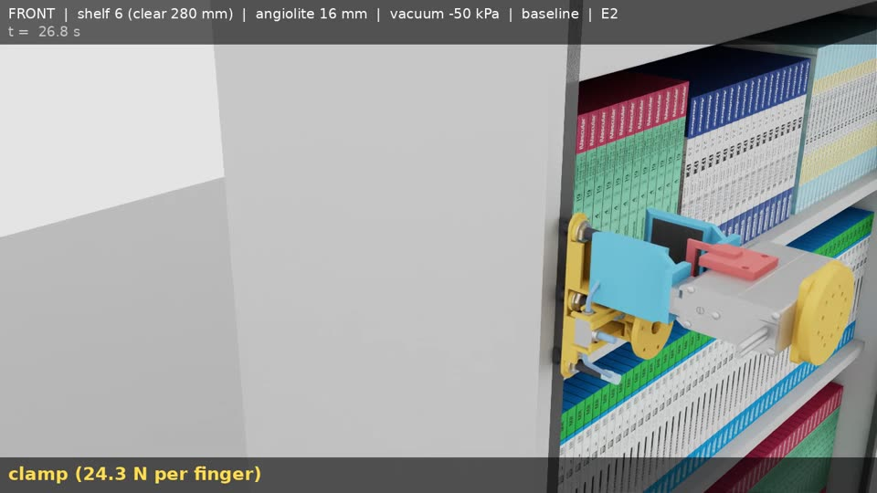
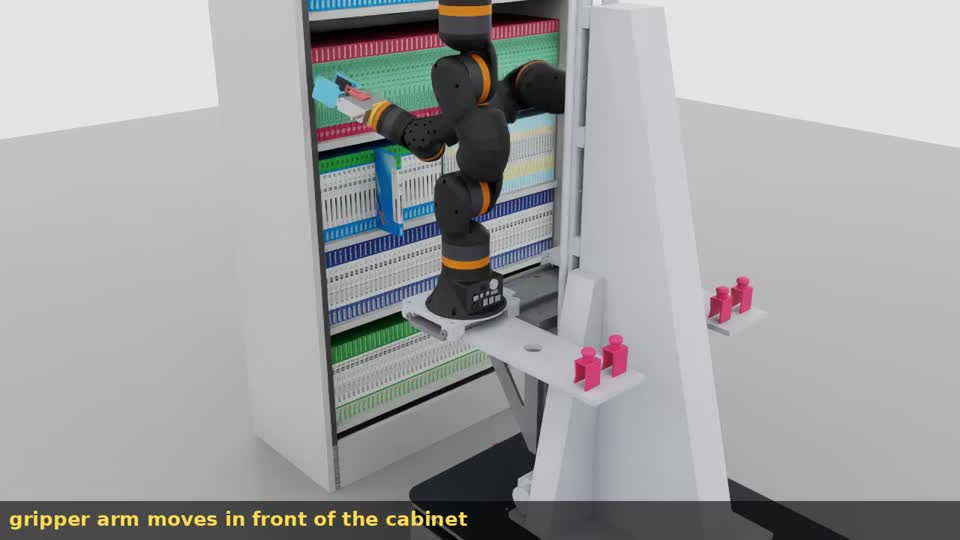
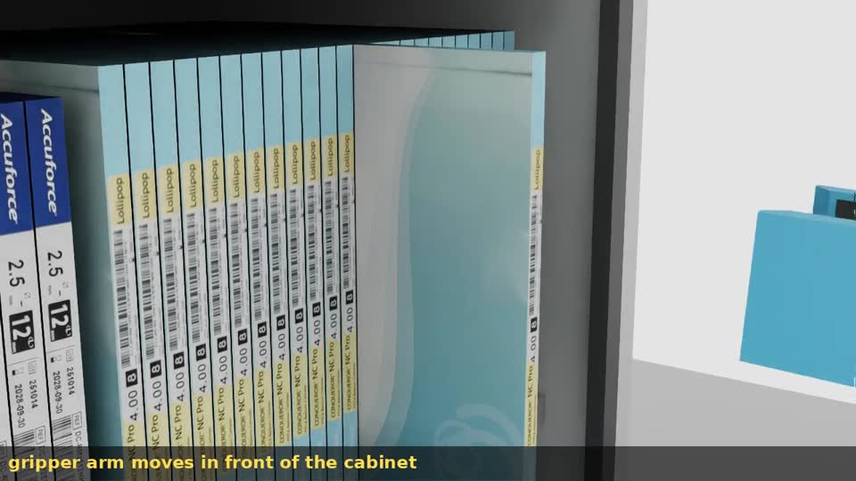
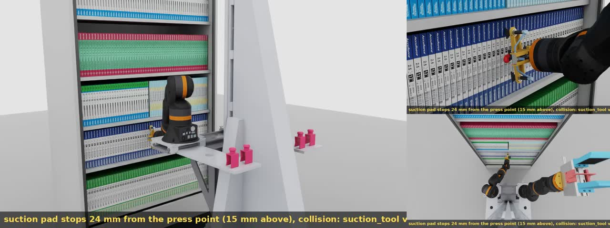
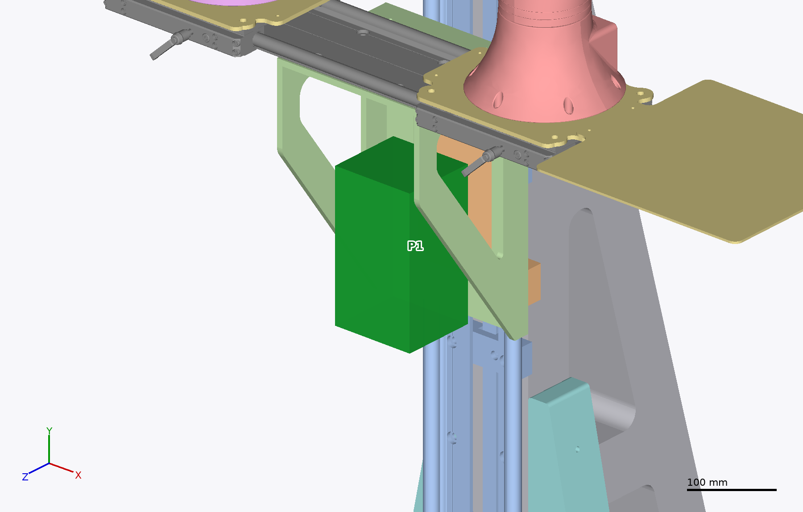
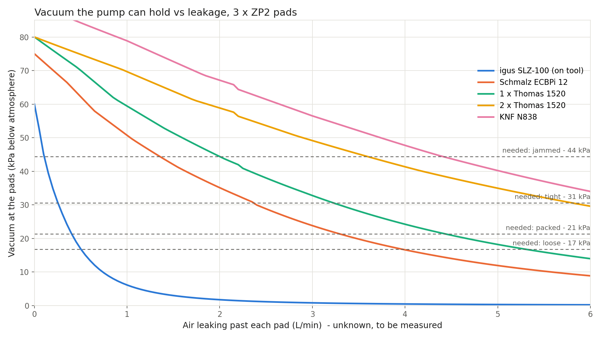
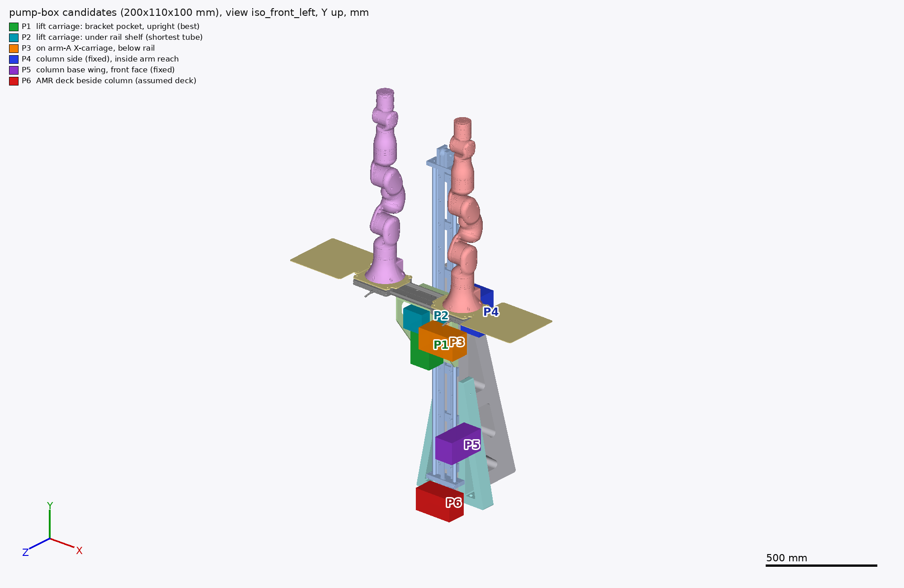

Can the dual-arm robot pull a medicine carton out of the real stocked cabinet with a suction tool and then take it with the gripper? This report covers the tool design, the vacuum pump choice, tool-only grasp tests, and the full-robot test.
Pump sizing: the worst case modelled (cartons jammed at 6 N per side) needs −44 kPa at the pads. The ECBPi still holds about −51 kPa with a 1 L/min leak per pad. A single small on-tool pump (igus SLZ-100) drops to −17 kPa at a 0.5 L/min leak and is not enough. Carton mass, friction and side forces are estimates, not measurements.
The two tools were moved along set paths without arms, to test only the contact physics (pull, effect on neighbours, clamp, slip). The simulated suction release is enforced by a software monitor set to the calculated pull-off force (pad area × vacuum): it released at 17.2 N against 17.4 N calculated at −50 kPa. This does not model real seal leakage, peeling or carton flex.
Target names: T1–T8 are cartons in the middle of a row; E1 and E2 are cartons at the end of a row (E2 next to the cabinet side wall). Top-down: the gripper takes the carton from above after the pull. Front: it takes it from the front (the method used on the full robot).
| Target | Shelf | Carton | Thickness | Top-down | Front |
|---|---|---|---|---|---|
| T1 | 1 | Ultimaster | 16 mm | OK | OK |
| T2 | 2 | Accuforce | 16 mm | OK | OK |
| T3 | 3 | Agent | 15 mm | OK | OK |
| T4 | 3 | Conqueror | 12 mm | OK | OK |
| T5 | 4 | Angiolite | 16 mm | OK | OK |
| T6 | 5 | Agent | 15 mm | OK | OK |
| T7 | 6 | Accuforce | 16 mm | OK 150 mm pull | OK |
| T8 | 6 | Conqueror | 12 mm | OK 150 mm pull | OK |
| E1 | 3 | Agent, end of group | 15 mm | OK | OK |
| E2 | 6 | Angiolite, next to side wall | 16 mm | FAIL | FAIL |

On the passing targets the pull is exact (100 mm, follow error ≤ 0.26 mm), neighbours move ≤ 0.1 mm and the carton slips ≤ 0.2 mm on extraction.
Front gives 86–125 mm to the shelves above and below. Top-down leaves only 9 mm to the shelf above, and on shelf 6 it needs a 150 mm pull to clear the top panel.
Target T5 (Angiolite, shelf 4) was repeated with one condition changed at a time, using the front grasp and the tools without arms.
| Condition | Result | Pull mm | Neighbour moved mm | Carton turned ° | Shift when gripper closes mm | Min gap to neighbour mm |
|---|---|---|---|---|---|---|
| Baseline (−50 kPa) | OK | 100.0 | 0.00 | 0.06 | 0.02 | 6.6 |
| Weak vacuum, −35 kPa | OK | 100.0 | 0.00 | 0.06 | 0.02 | 6.6 |
| Tightly packed, no gaps | OK | 100.0 | 0.04 | 0.11 | 0.01 | 5.6 |
| Tool 2 mm off-centre | OK | 100.0 | 0.00 | 0.06 | 0.03 | 4.6 |
| Tool turned 3° | FAIL | 99.4 | 4.43 | 1.31 | 3.32 | 6.4 |
At T5 the grasp passed each of these single changes: weaker vacuum, tight packing and a 2 mm sideways error. Because the pads carry very little force in these runs, the weaker-vacuum pass says little about real holding. Combined errors were not tested. It does not tolerate angle errors: at 3° the pads twist the carton, the neighbour is dragged 4.4 mm (limit 3 mm) and the gripper then pushes the twisted carton. Only 0° and 3° were tested, so the exact angle limit is not known; measuring the spine angle with the wrist camera before pressing is a proposed fix, not yet tested.
The robot model (stand, lift and both arms with their tools) was placed in front of the cabinet. For each target, the lift height was chosen so that both arms can do the whole sequence: every point reachable within joint limits, straight-line contact moves, and clearance from the cabinet, the other cartons, the robot's own stand and the other arm. The robot's position in front of the cabinet was also adjusted per shelf group (410–440 mm from the cabinet front, up to 55 mm sideways). Each target was run once; the motions were time-scheduled joint paths, not a camera-driven run.
| Target | Shelf | Result | Lift |
|---|---|---|---|
| T1 | 1 | not reachable | – |
| T2 | 2 | not reachable | – |
| T3 | 3 | reachable | 24 |
| T4 | 3 | reachable | 24 |
| E1 | 3 | reachable | 24 |
| T5 | 4 | reachable | 164 |
| T6 | 5 | reachable | 414 |
| T7 | 6 | reachable | 714 |
| T8 | 6 | reachable | 724 |
| E2 | 6 | not reachable | – |
Lift: height above the lift's lowest position, mm (stroke 1250 mm). The arm sliders stay at their home position.
| Target | Result | Pull mm | Neighbour mm | Slip mm | Carton raised mm | Rotation ° | Min clearance mm |
|---|---|---|---|---|---|---|---|
| T3 | OK | 100.6 | 0.58 | 0.10 | 50.0 | 0.15 | 6.0 |
| T4 | OK | 100.6 | 0.10 | 0.09 | 50.2 | 0.16 | 4.5 |
| T5 | OK | 99.9 | 0.38 | 0.29 | 49.8 | 0.24 | 6.6 |
| T6 | OK | 99.9 | 0.45 | 0.08 | 50.2 | 0.22 | 6.1 |
| T7 | OK | 99.8 | 0.64 | 0.03 | 50.2 | 0.24 | 6.6 |
| T8 | OK | 99.9 | 0.57 | 0.10 | 50.2 | 0.24 | 4.6 |
| E1 | OK | 99.9 | 1.30 | 0.19 | 50.1 | 0.19 | 6.0 |
Min clearance is suction tool to neighbouring carton during the press. Arm joint tracking error ≤ 38.5 mrad; joint effort ≤ 15 % of the limit; no robot–cabinet contact. Separately, MoveIt planned the T3 and T8 sequences successfully (plan only, no execution).


With the robot 410 mm in front of the cabinet, the lift at its lowest position and the sliders at home, each arm was moved as close to its target pose as it can get under relaxed clearance checks. Gaps are tool point minus target; "above" means the tool stops higher than the target.
| Target | Arm | Gap | Vertical | Depth | Sideways | Angle | Blocked by |
|---|---|---|---|---|---|---|---|
| T1 · shelf 1 | Suction | 195 mm | 150 above | 117 short | 46 | 41° | joint 2 at 139° limit |
| T1 · shelf 1 | Gripper | 116 mm | 97 above | 56 short | 29 | 43° | joint 2 at 139° limit |
| T2 · shelf 2 | Suction | 24 mm | 15 above | 18 short | 6 | 13° | tool hits neighbouring cartons |
| T2 · shelf 2 | Gripper | 0 mm | 0 | 0 | 0 | 0° | reaches |

These closest poses were accepted down to 1.5 mm clearance (the shelf 2 suction pose has 2.0 mm), instead of the 15 mm arm-to-cabinet and 3 mm tool-to-carton clearances used elsewhere. In the simulation the T1 gripper finger touches the cabinet and a T2 pad rests on a neighbour at the stop pose. Approach paths were checked in the study model only, not in MoveIt.
Drag to rotate, scroll to zoom, right-drag to pan. Models are in the tool flange frame (link6); the grid is 10 mm.

The ECBPi is a 24 V electric vacuum generator with the vacuum sensor, the vent (release) valve and part-present output built in, so no extra valve block or sensor is needed. It draws 0.6 A at 24 V.
There is no room for it on the platform beside the stand, and on the tool it would add 0.775 kg at the wrist, so it goes on the lift carriage. Fallback if more flow is needed: 2 × Thomas 1520VDP BLDC.
Five vacuum sources were simulated with the 3 suction pads, the tube from the pump to the tool, and air leaking past each pad. Leakage depends on the carton surface and is not measured yet, so the question is how much leak each pump can tolerate before the vacuum drops below what the pull needs.

| Packing case | Side force per face | Pull force | Most loaded pad | Vacuum needed |
|---|---|---|---|---|
| Loose | 0 N | 0.9 N | 1.0 N | 17 kPa |
| Packed | 1 N | 1.7 N | 1.2 N | 21 kPa |
| Tight | 3 N | 3.3 N | 1.8 N | 31 kPa |
| Jammed | 6 N | 5.7 N | 2.6 N | 44 kPa |
| Pump | Where | Free flow | Max vacuum | Power | Mass | Loose | Packed | Tight | Jammed |
|---|---|---|---|---|---|---|---|---|---|
| igus SLZ-100 (Schmalz ECBPMi) | on tool | 1.6 L/min | 60 kPa | 7 W | – | 0.50 | 0.40 | 0.25 | 0.11 |
| Schmalz ECBPi 12 (preferred) | stand P1 | 12 L/min | 75 kPa | 13 W | 0.78 kg | 3.98 | 3.30 | 2.37 | 1.36 |
| 1 × Thomas 1520VDP BLDC | stand | 16 L/min | 80 kPa | 31 W | 0.42 kg | 5.31 | 4.44 | 3.23 | 2.01 |
| 2 × Thomas 1520VDP BLDC | stand | 32 L/min | 80 kPa | 62 W | 0.84 kg | 9.52 | 7.97 | 5.81 | 3.60 |
| KNF N 838 KN.29DC-B | stand | 34 L/min | 90 kPa | 55 W | 1.9 kg | 10.43 | 8.82 | 6.63 | 4.42 |
Leak values in L/min per pad. The ECBPi evacuates the pads in 0.05–0.18 s (at half the leak it tolerates in each case) and has the sensor, vent valve and part-present output built in. The on-tool SLZ-100 only works if the pads hardly leak. Assumptions: carton 0.15 kg, floor friction 0.5, side friction 0.4, pull acceleration 1 m/s², safety factor 2, pad area 1.16 cm², choked leak model (ISO 6358, b = 0.5), Ø4 tube 1.6 m from the stand (0.15 m for the on-tool pump), no filter or valve losses. Only the KNF curve is published; the other curves use the KNF shape scaled to each pump's rated flow and vacuum. Side forces between cartons are estimates and dominate the result.
The team reports no room for the pump on the platform beside the stand, so six spots on the stand were ranked for a 110 × 200 × 100 mm box (room for the pump, valve and wiring) with at least 10 mm clearance over the full lift stroke and slider travel.

| Rank | In image | Location | Moves with | Tube to tool | Search-box clearance | Issue |
|---|---|---|---|---|---|---|
| 1 | P1 | Bracket pocket on the lift carriage (preferred) | lift | 1.58 m | 24.9 mm | None; mounts to the 8 mm bracket floor plate |
| 2 | P2 | Same pocket, under the rail shelf, lying | lift | 1.43 m | 12.8 mm | Front edge 33 mm past the shelf |
| 3 | – | Beside the bracket on the carriage | lift | 1.42 m | 12.1 mm | Needs an extra L-bracket |
| 4 | P3 | Under the rail on the arm's slider | lift + slider | 1.38 m | 13.0 mm | Cantilevered, nothing solid to mount to |
| 5 | P4 | Column side face, under the lift | fixed | up to 2.26 m | 14.7 mm | Arms can reach it; needs a drag chain |
| 6 | P5 | Column wing front face, base | fixed | up to 2.71 m | 12.1 mm | Long tube, needs a drag chain |
P1 travels with the lift, so the tube does not have to absorb the 1250 mm stroke. Not yet checked: the lift carriage payload with the pump, heat in the pocket, and 24 V supply on the carriage.